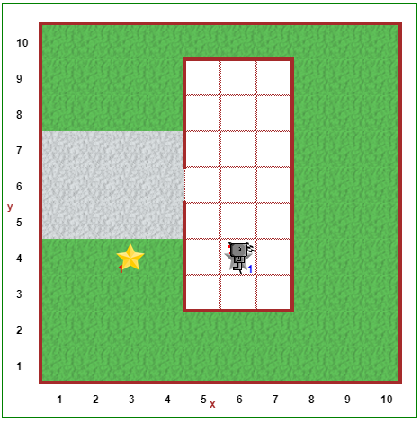

Be to, kad dabar galite pasukti Robotuką į dešiną, jums gali praversti apsisukimo operacija; pavyzdžiui, jei
einate į priekį, jums gali prireikti apsisukti tam, kad grįžtumėte atgal. Sukursime funkciją
suktis_aplink():
def suktis_aplink():
suktis_kairėn()
suktis_kairėn()
Kai programuotojas naudoja tam tikrą funkciją skirtingose programose, užuot iš naujo apibrėžęs ją kiekvienoje rašomoje programoje, jis įrašo ją į bibliotekomis taip, kad kitos jo programos galėtų naudoti bibliotekoje esančias funkcijas.
Funkciją suktis_dešinėn() naudosite daug kartų! Užuot kiekvieną kartą ją perrašinėję
Pitono kodas kortelėje, paspauskite kortelę biblioteka ir rašykite ten. Beje,
suktis_aplink() taip pat turėtų būti parašyta ten.
Tada, kai norėsite naudoti bibliotekoje apibrėžtas funkcijas, tiesiog rašykite from library import (po
to įrašykite funkcijų pavadinimus, atskirtus vienas nuo kito kableliais) Pitono kodo redaktoriuje. Pavyzdžiui, jei
bibliotekoje apibrėžėte suktis_dešinėn(), galite įvesti from library import suktis_dešinėn
ir dabar galėsite naudoti suktis_dešinėn() funkciją bet kurioje kodo vietoje.
Jei bibliotekoje išsaugosite daug funkcijų, galite naudoti from library import *, kad importuotumėte
visas bibliotekos funkcijas. Ženklas * vadinamas pakaitiniu ženklu ir šiuo atveju
nurodo importuoti visas funkcijas, kurias jis gali rasti bibliotekoje.
Dėmesio!
Tyrinėdami Robotuko pasaulius naudojame komandą
from library import, kuri leidžia tiesiog naudotisuktis_dešinėn(). Vėliau kurso metu pereisime prie komandosimport librarynaudojimo, todėl norint naudoti šią funkciją turėsite įvestilibrary.suktis_dešinėn().
Atsidarykite Robotuko aplinkos.
Robotukui reikia nueiti pasiimti laikraštį ("Fenikso žvaigždė"), kuris yra prie namų. Jei dar to
nepadarėte, bibliotekos skirtuke apibrėžkite abi funkcijas suktis_dešinėn() ir
suktis_aplink(). Dabar naudokite bibliotekoje apibrėžtas funkcijas, kad Robotukas paimtų laikraštį,
grįžtų atgal į namą ir padėtų laikraštį ant žemės. Beje, nepamirškite naudoti komentarų ir tuščių eilučių, kad jūsų
sprendimas būtų lengviau skaitomas!